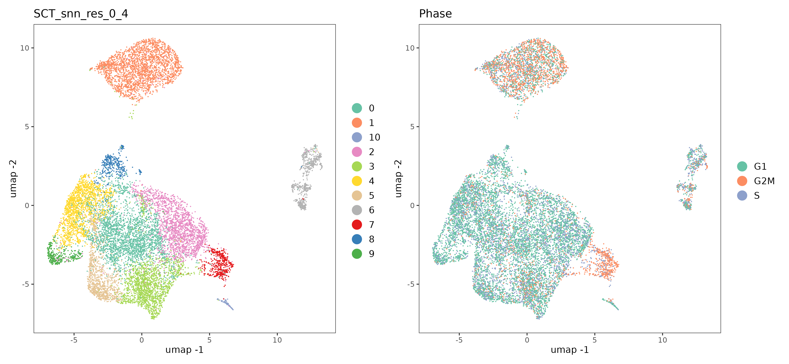
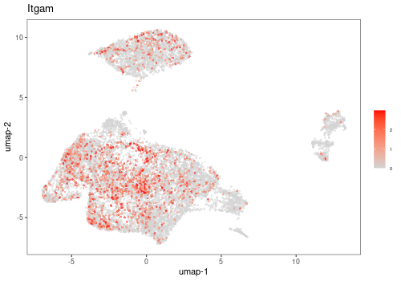
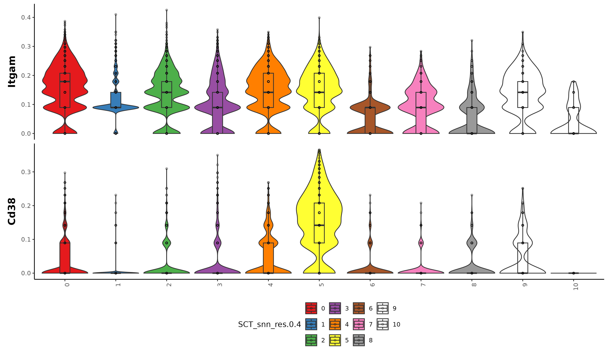
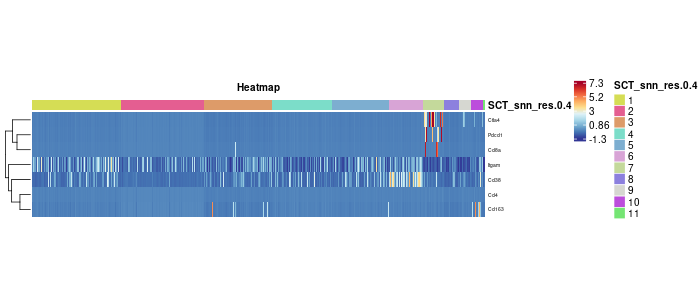
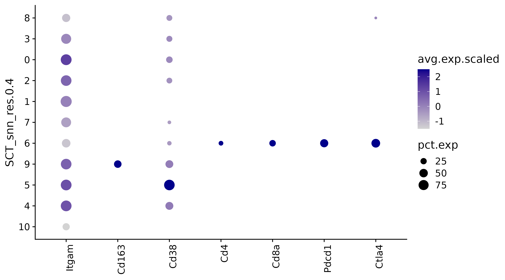
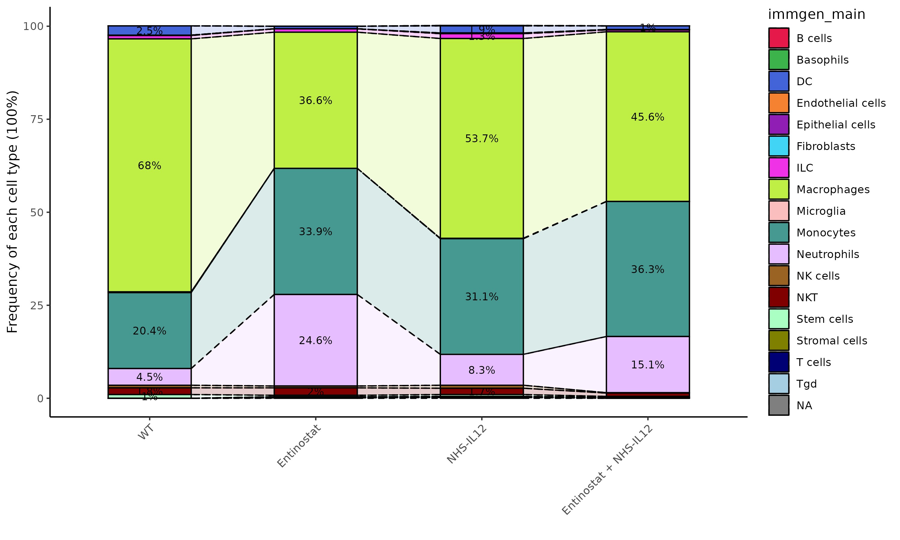

Visualizations
SCWorkflow-Visualizations.RmdColor by Metadata
Use this Function to color your dimensionality reduction (TSNE & UMAP) with different columns from your Metadata Table. You can select one or more columns from the Metadata Table, and for each column selected, this function will produce a plot (t-SNE & UMAP) using the data in that column to color the cells.
This function visualizes your plot based on selected metadata. Users can customize how they want to visualize the data, including the type of visualization used, the size and shape of the points, and the level of transparency.
FigOut=plotMetadata(
object=Anno_SO$object,
samples.to.include=c("PBS","ENT","NHSIL12","Combo","CD8dep" ),
metadata.to.plot=c('SCT_snn_res.0.4','Phase'),
columns.to.summarize=NULL,
summarization.cut.off = 5,
reduction.type = "umap",
use.cite.seq = FALSE,
show.labels = FALSE,
legend.text.size = 1,
legend.position = "right",
dot.size = 0.01
)
Plot 3D Dimensionality Reduction
This Function creates 3D interactive UMAP or t-SNE plot. The plot is saved in the output folder as an HTML file that can be downloaded.
This function is designed to generate a 3D t-SNE visualization based on a given Seurat Object. The output includes an interactive plot and a dataframe containing the t-SNE coordinates. The function accepts several parameters, such as the Seurat Object, a metadata column for color, a metadata column for labeling, dot size for the plot, legend display option, colors for the color variable, filename for saving the plot, the number of principal components for t-SNE calculations, and an option to save the plot as a widget in an HTML file. Initially, the function executes t-SNE on the Seurat Object to obtain the 3D coordinates. Subsequently, it constructs a dataframe for the Plotly visualization, incorporating the t-SNE coordinates, color variable, and label variable. The function generates a 3D scatter plot using the t-SNE coordinates. Finally, the function saves the plot as an embedded Plotly image in an HTML file.
Methodology
t-Distributed Stochastic Neighbor Embedding (t-SNE) is a sophisticated
dimensionality reduction technique frequently employed for the
visualization of high-dimensional data [1]. It effectively displays the
relationships between individual cells based on their gene expression
profiles. To compute t-SNE, the algorithm constructs a probability
distribution representing similarities between data points in
high-dimensional space. Subsequently, it generates a lower-dimensional
representation, typically two or three dimensions, wherein the distances
between data points reflect their similarities in the high-dimensional
space. The algorithm employs an iterative process to adjust the
positions of cells in a lower-dimensional space, aiming to minimize
discrepancies between the original high-dimensional similarities and
those in the lower-dimensional space. This approach enables the
algorithm to capture both global and local structures within the data,
effectively revealing clusters or groups of similar cells.
FigOut=tSNE3D(
object=Anno_SO$object,
color.variable='SCT_snn_res.0.4',
label.variable='SCT_snn_res.0.4',
dot.size = 4,
legend = TRUE,
colors = c("darkblue","purple4","green","red","darkcyan",
"magenta2","orange","yellow","black"),
filename = "plot.html",
save.plot = FALSE,
npcs = 15
)Color by Genes
This function visualizes gene expression intensities for provided Genes across your cells. If a gene is not found in the dataset, the Log will report this. Otherwise, you should see one plot (TSNE or UMAP, your choice) per gene name provided. The intensity of the red color will be relative to the expression of the gene in that cell. Final Potomac Compatible Version: v98. Sugarloaf V1: v103. [View
Methodology
This function visualizes expression values of the chosen gene or protein
in different samples. Users can customize how they want to visualize the
data, including the type of visualization used, the size and shape of
the points, and the level of transparency.
FigOut=colorByGene(
object=Anno_SO$object,
samples.to.include=c("PBS","ENT","NHSIL12","Combo","CD8dep" ),
gene='Itgam',
reduction.type = "umap",
number.of.rows = 0,
return.seurat.object = FALSE,
color = "red",
point.size = 1,
point.shape = 16,
point.transparency = 0.5,
use.cite.seq.data = FALSE,
assay = "SCT")
Violin Plot from Seurat Object
This Function allows for the generation of customized violin plots to visualize transcriptional changes and interactions in single-cell RNA-seq data, providing insights into the cellular heterogeneity and dynamics within the dataset.
Methodology
The Function organizes your data based on specific groups that you
choose from a Seurat Object metadata. It then gathers information about
the activity levels of specific genes you’re interested in. You can, if
you wish, change the names or the order of these groups based on a
column you specify in the data. This feature lets you tailor the
analysis more closely to your needs. The code also has a function that
removes any odd data points that might distort the results, and it
adjusts the data to make it easier to visualize through jittered points
and an overlaying boxplot displaying quantile information. Then, the
code creates violin plots, which allows you to see how the activity
levels of genes vary within each group [2]. The graph is customizable,
letting you set various options such as limit values on the vertical
axis, displaying individual data points, converting scales to
logarithmic, and showing boxplots. You can choose how the plot looks -
whether it’s laid out like a grid, in rows, or with customized
labels.
FigOut=violinPlot_mod(
object=Anno_SO$object,
assay='SCT',
slot='scale.data',
genes=c('Cd163','Cd38'),
group='SCT_snn_res.0.4',
facet_by = "",
filter_outliers = F,
outlier_low = 0.05,
outlier_high = 0.95,
jitter_points = TRUE,
jitter_dot_size = 1
)
Heatmap
This Function provides a comprehensive method for visualizing single
cell transcript and/or protein expression data in the form of a heatmap.
The data is obtained from a Seurat object, and the user can specify a
set of genes for the analysis.
The Function allows optional ordering by metadata (categorical) or
gene/protein expression levels. Visualization customization options
include color choices for the heatmap, addition of gene or protein
annotations, and optional arrangement by metadata.
Key features include: - Options for adding gene or protein annotations, metadata arrangement, and specifying row and column names. - Customizable visualization settings including font sizes for rows, columns, and legend, row height, and heatmap colors. - Ability to trim outlier data, perform z-scaling on rows, and set row order.
The Function returns a heatmap plot along with the underlying data used to generate it. It also allows the user to set a seed for color generation and specify outlier data parameters. This function is particularly useful for exploratory data analysis and preliminary data visualization in single cell studies.
Methodology
In this method, two hierarchical clustering processes are performed: one
on the rows and one on the columns of the dataset unless ordered by
annotations. Hierarchical clustering is a method of cluster analysis
that aims to build a hierarchy of clusters. The result is a tree-like
diagram called a dendrogram, where similar data points (e.g., genes or
samples) are joined together into clusters at the “branches”, based on a
mathematical measure of similarity such as Euclidean or Manhattan
distance. The heatmap is produced by a package called ComplexHeatmap [3]
and presents the data matrix where rows represent individual genes (or
proteins, metabolites, etc.) and columns represent different samples
(e.g., tissue samples, cells, experimental conditions). The color at
each position in the grid corresponds to the expression level of a gene
in a particular sample, with one color representing upregulation (higher
expression), another representing downregulation (lower expression), and
usually a neutral color representing no change. This allows for easy
visual interpretation of patterns or correlations in the data.
FigOut=heatmapSC(
object=Anno_SO$object,
sample.names=c("PBS","ENT","NHSIL12","Combo","CD8dep" ),
metadata='SCT_snn_res.0.4',
transcripts=c('Cd163','Cd38','Itgam','Cd4','Cd8a','Pdcd1','Ctla4'),
use_assay = 'SCT',
proteins = NULL,
heatmap.color = "Bu Yl Rd",
plot.title = "Heatmap",
add.gene.or.protein = FALSE,
protein.annotations = NULL,
rna.annotations = NULL,
arrange.by.metadata = TRUE,
add.row.names = TRUE,
add.column.names = FALSE,
row.font = 5,
col.font = 5,
legend.font = 5,
row.height = 15,
set.seed = 6,
scale.data = TRUE,
trim.outliers = TRUE,
trim.outliers.percentage = 0.01,
order.heatmap.rows = FALSE,
row.order = c()
)
Dot Plot of Genes by Metadata
This function creates a dot plot of average gene expression values for a set of genes in cell subpopulations defined by metadata annotation columns. The input table contains a single column for genes (the “Genes column”) and a single column for category (the “Category labels to plot” column). The values in the “Category labels to plot” column should match the values provided in the metadata function (Metadata Category to Plot). The plot will order the genes (x-axis, left to right) and Categories (y-axis, top to bottom) in the order in which it appears in the input table. Any category entries omitted will not be plotted.
The Dotplot size will reflect the percentage of cells expressing the gene while the color will reflect the average expression for the gene. A table showing values on the plot (either percentage of cells expressing gene, or average expression scaled) will be returned, as selected by user.
Methodology
This function creates a dot plot visualization of gene expression by
metadata from a given dataset. It uses the Seurat package to create
these plots. The size of the dot represents the percentage of cells
expressing a particular gene (frequency), while the color of the dot
indicates the average gene expression level. The function ensures that
only unique and valid genes and categories are used. If some categories
or genes are not found in the dataset, appropriate warnings are issued.
The plot is then drawn with the option to reverse the x and y-axes and
to reverse the order of metadata categories. The colors can also be
customized. In addition to the plot, the function provides the tabular
format of the dot plot data, which can be useful for further analysis or
reporting. A choice of returning either the tables representing the
percent of cells expressing a gene or the average expression level of
the genes. This function can be useful for exploratory data analysis and
visualizing the differences in gene expression across different
conditions or groups of cells.
- Seurat package Dotplot Documentation https://satijalab.org/seurat/reference/dotplot
FigOut=dotPlotMet(
object=Anno_SO$object,
metadata='SCT_snn_res.0.4',
cells=unique(Anno_SO$object$SCT_snn_res.0.4),
markers=c('Itgam','Cd163','Cd38','Cd4','Cd8a','Pdcd1','Ctla4'),
plot.reverse = FALSE,
cell.reverse.sort = FALSE,
dot.color = "darkblue"
)
Compare Cell Populations
This function compares cell population composition across experimental groups (for example sample, treatment, timepoints, or donor cohorts) using metadata already stored in the Seurat object. It is useful after clustering and annotation, when you want to quantify how specific cell populations shift between conditions. The function supports both Frequency (percent) and Counts (absolute cell numbers) modes. In most biological comparisons with unequal total cell recovery across samples, frequency mode is preferred for interpretation. Counts mode can be useful for QC and yield-focused assessments.
Methodology
The method first aggregates metadata by annotation and group to compute
percentages and counts. It then links these summaries to sample-level
metadata and generates a composition-focused barplot for sample-level
variability. Together, these plots help distinguish overall
compositional shifts from replicate-level dispersion.
FigOut=compareCellPopulations(
object=Anno_SO$object,
metadata.table=Anno_SO$object@meta.data,
annotation.column='immgen_main',
group.column='Treatment',
counts.type = "Frequency",
group.order = NULL,
wrap.ncols = 5
)

Seurat Documentation for t-SNE Analysis https://satijalab.org/seurat/reference/runtsne
Complex Heatmap Reference Book https://jokergoo.github.io/ComplexHeatmap-reference/book/